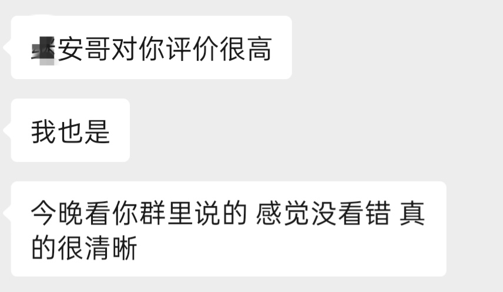
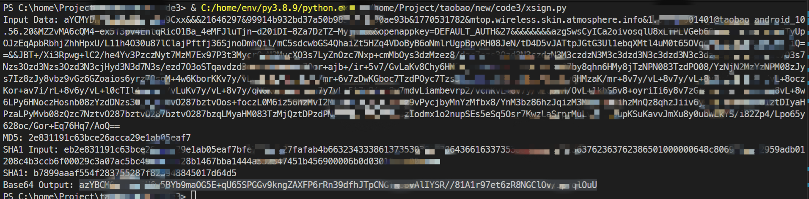
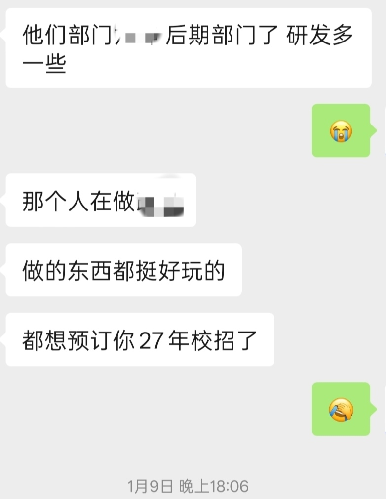

今年是非常重要的一年呢。(长文警告๑乛◡乛)
从大一开始就开始每年做年终总结了，因为我只有春节才闲的下来，并且只觉得春节是年终，所以每年都是春节前后写年终总结。
元旦有特别多的师傅都做了年终总结，我都认真读了，发现认识的大家在这一年收获都特别多，生活也十分精彩，我窥镜自视，弗如远甚。但每当我读到大家的年终中提到我时，我非常开心，感谢也好，遗憾也好，期待也好，都让我觉得很开心。不管是谁都会想有存在过的痕迹吧，以前的年终总结现在来读总有种流水账的感觉，今年要认真写写这一年发生的事。
# 内耗和感激
这段我写在最前面，想要送给这段时期帮助我的人。
人很难不被周围的事物影响 ，而我又是个很胆小的人，对什么事都要考虑再三。学长们在这一年都在找自己的路，同届的两个队友暑假也出去实习了，我在问一事无成的自己: 我呢？ 。我有睡前总结和思考的习惯，我不会刻意去想，但白天可能是一瞬的念头这个时候就会蹦出来，好几个日夜都是如此。我太害怕未来了，我是那么胆小，别人的夸赞我是不会信以为真的，因为我知道自己有几斤几两，越是看清自己就越是会告诉自己: 要做点什么，如果什么都不做你也就这样了 ，有点像自我暗示吧，这种感觉越来越强烈，慢慢变成忧虑。我不喜欢攀比，不认为我这种忧虑是谁或者谁的经历给我带来的，我觉得是一种对一事无成的恐惧，对未来的恐惧。上大学之前我就在考虑未来，渐渐地我也有了未来的方向，但是我从来没有迈出过一步，这是我不能接受的，我在这个大家都迈出一步的时候感到忧虑。
我开始行动，认真写一份简历，没什么经验就看着别人的简历改，把自己做过的东西拿过的奖一股脑写上去，当时挺傻的写了两页 (之后听学长说一般是全挤在一页才好，寒假时又重新精简成了一页)。然后手机装了各种招聘软件，脉脉，牛客，boss 直聘，但是合适的岗位不能说不多，只能说几乎没有 (因为都是写着 26 届校招，但我是 27 的呢)。在牛客发现两个可能合适的，一个是 pdd 投完一个直接简历拒了，一个是快手已读不回。在脉脉上聊过一两个都是没有日常实习 hc 的，当时暑假已经开始了，按实习投递时间来说确实已经很晚了。感觉那几天看这几个软件的频率超级高啊，几乎每天都看。
后面有点无望了，感觉自己每天都无精打采，但焦虑还在加重，那几天饭吃不下，睡前也会乱想很久，然后看看招聘软件放下手机，然后再看看再放下，时间久了我自己也察觉到了，但是我控制不住自己，我真是傻了吧唧的😭。但这段时光很煎熬，但我觉得我很幸运，和几个朋友倾述，朋友一连发好几段语音安慰我替我加油，我真的很幸运啊😭。感谢 l4n ，你一连发几个语音真的很有力气，感谢你劝导我，你的语音我听了一遍又一遍。感谢 inkey 带着我打歌还给我加油鼓励，认识你真的太棒了。感谢 3cly 给我普及实习的知识，大哥人真太好了。感谢所有在我困难时给我帮助和鼓励的人。

最后感谢 yhx学长 给了我一次机会😭

回过头来看，这次内耗是我最傻的一次经历，不过我不后悔，这促使我迈出了一步。但以此贴为证，以后即使做不到乐观我也不会再被自己困在忧虑中。
# CTF 比赛
今年也去过不少地方啊，杭州，南京，湖南，宁波，台州，石家庄，北京。大部分都是去打比赛的，其中杭州打了好几次哈哈哈，打了些什么比赛比赛校队公众号年终也发了不细说了。不过和去年相比还是少了些，因为大家都有自己的事要做吧，各种小一点的难报销的比赛都没有打了，同时校队里大部分人都有联队了，大四学长也基本不怎么打了 (今年我大概也会像他们一样吧，寻找未来的路)。
小登们都面了自己的联队，我感觉大家都很分散，可能小登想在联队多发展吧，因为我们这样的老登确实在某种情况下挡住了他们的前进，不过小登都很厉害啊，有些线上比赛还被他们击败，校队也算是蒸蒸日上。
在集训队的生活真的很快乐，起起哄，拌拌嘴，互相捧一下，踩一下，有比赛就奋力作战，没比赛搞搞项目，打打游戏，看看别人屏幕在做什么，在学什么，然后自己做自己的项目，学自己的东西。今年聚餐频率也高得可怕啊，每个星期都会一起去大吃一顿，不过也有小伙伴不是很合群，每次叫他都会说 “没钱”，结果转眼就把钱砸到买黄金去了。
对我而言，今年我虽然校队各种比赛都有一起打，但却慢慢淡出了 CTF 这个圈子，和当初比赛时认识的朋友们渐渐地没了往来，各种各样的群也因为各种原因慢慢退掉了。在这里说句实话，我觉得国内很多 CTF 的群的社交像个饭圈吧，有很多行为让我感到不适，我不是在说全部，但是造谣，吃瓜，空间挂人，幸灾乐祸，让我有点厌恶，有些朋友不打国内 CTF 原因我也有所理解了。我也算是懂了一些，像 yuro 那样打完一个国内比赛退一个群可能才比较清净，单纯享受解题的过程，没有人来捧你，你也不需要在乎任何人说什么，单纯的技术上的追求，然后再结交几个朋友偶尔探讨一下问题应该是最好的体验了。那种靠纯聊天，追捧，整活，活跃在 CTF 圈子里的人想必也会十分空虚，没能收获技术和真心认可你的朋友只会虚度光阴。
就今年来看各行业受 ai 冲击都很大，CTF 也不例外，各种线上比赛含金量都急剧下降，某些小比赛的附件直接上传到 ai 平台就可以出结果，CTF 比赛变成了比 token 的比赛。我自己也思考了一下，去年的 ai 还没有这样的能力，最多是查查资料写写样板代码的程度，今年的 ai 明显有突破性的飞升，甚至连公认的难题也有办法解决。这一年战队的招新不是我负责的，但是确实听到过很多靠 ai 解题进入面试环节的，和朋友聊天也听说刚招的人基础不牢，很多基础的插件都不认识不会用，旁听了一场面试，面试的人说不清简单的加密步骤。就逆向而言，CTF 题目一般设计得比较直接，一个输入一个输出，题目也可能就 10 多 mb，这对于 ai 来说十分方便，在沙箱里自己跑完分析就能出结果，可能 CTF 也需要改革了吧。
再谈谈联队吧，今年 liv 和新的师傅们来主队带起大家的积极性一连拿了好几个第一，主队里也变得活跃起来了，看了 liv 的博客，我觉得是我要感谢 liv 才对，希望他带大家一起变得更强。说实话刚来主队的时候我也对主队打比赛的频率有点不满，群里聊天也非常冷，感觉全是社畜的那种氛围，这里似乎找不到归属感，我觉得 VVNN 的逆向小群可能比那里好得多，不过慢慢地也就没有在意了，只在比赛时打开文档交流。但现在的氛围好了很多，大家也打了很多比赛，不过新的一年我可能也没有精力放在这里了，还是得说声抱歉。
# 实习时光
高考前我听过一句话，平时模拟考你不会可以随便选一个，但当高考机会只有一次你还敢随便选吗？在我听来这是在说， 当你犹豫不决时你能在仅剩的时间里拿出勇气做出不会后悔的选择吗？ ，我做到了选择，至于后不后悔由以后的我来考量。
第一次出去实习对我来说具有特别的意义。飞到北京，第一次租房，第一次独居，第一次上班，第一笔工资，第一次吃烤全羊，还有周末时无比沉重的身体，一切都太新奇了。组里的大家都没有给我们太大的压力，刚来时我还有点不太适应，不过也有很快进入状态了，渐渐地上班生活形成了一种规律。这里要特别感谢 rea1 啊，从上班第一天接我到工位再到之后帮我熟悉各种公司的东西，上班一起赶班车，下班一起骑共享单车回去，午休一起玩玩游戏，没有他我可能会经历更多的困难，我还是觉得自己太幸运了，不过还是想吐槽一下午饭能不能别老去吃那个🍔，哈哈哈。
组里的氛围真的非常好，闲聊时大家开开玩笑，吃饭的时候谈谈未来，公司里搞的好多活动也大家一起参加 (有次中了一个充电宝，我高兴坏了)，还有饭后秘密基地 (其实是公司里的羽毛球场)，每一个月组里会组织一次分享会真的可以学到很多东西。国庆的时候，一起吃烤鱼节前庆祝，也是给 rea1 送别，虽然部门团建的时候也聚过餐 (一桌人吃全羊一半都没吃完)，但这次大家更加随性。rea1 你怎么这么能喝😆，强哥别劝酒了我真喝不下了，第一次喝这么多，路都走不稳了，还好第二天是国庆。
mt 很耐心地和我沟通，教给我很多东西，耐心和我讲解业务细节，同时也愿意听取我的意见。ld 安排的各种任务都比较适合我，还在工作之余关心我的生活 (南方人在北京真的会水土不服啊，10 月过后两天流一次鼻血，有时候一天甚至一次，好几次刚坐上工位一会儿就开始流了😢)，因为学校的事提离职的时候还在安慰我😭。晨哥在饭后休息时总和我讨论技术 (晨哥真厉害啊，被看雪和京麒特邀，可惜演讲的时候我没能去捧场)，谈谈未来的方向，多亏了他我也想明白了今后的发展。
说实话北京这次实习也算是一次豪赌吧，有整个大学里最难的几门专业课的情况下我还是选择了出来走自己的路。实习了半个月开学的时候我还在苦恼怎么把学校的问题解决，那时校队群里的小伙伴有人发
毕业了有那么多时间上班 非要现在抢着上不是 | |
pangbai你有点过于急切了 |
但是我觉得既然做了选择就要贯彻到底。不少小伙伴实习是偷偷溜的吧，不过我们这里这样行不通 (学校那个人脸两天不刷就会被打电话询问)。最后解决方案就是和辅导员 battle，再搞到好几个老师的证明，然后自己和父母写了一份保证书，那几天我真力竭了🙃。
学校期末的那几个星期我也是拼尽了全力，那时的一天除了吃和睡我几乎都在看书看网课，好几次看到凌晨 4 点眼镜疼死了才睡觉，最后发现好像考试考得没想象中那么难😇。直到这一年结束都是好结局，这次实习也算圆满落幕了。除夕时和晨哥小聊了一会儿，对我的肯定让我很感动，这也算年终总结吧，特地贴到到年终里来，哈哈哈。

其实，我总是喜欢装出一副无所谓的样子呢，但是很多时候心里已经乱如麻，有没有人懂我啊🙃，如果有人察觉到我很难受能不能安慰一下我呢。什么？你想让我改变？你个傻孩子。
# 技术与未来
好几个打比赛的师傅都和我聊过未来的话题。其实内耗那段时间我也没完全闲着 (我可不会傻等着呢)，我一直在学新的东西，特别是那些我没有接触到的角落。说实话，我觉得一切都不像偶然，那段时间我自己学到的东西确实在实习时派上了的用场，学了什么不细说了，但是学确实应该放在第一位。
学习能力始终应该保持，特别是这个 ai 猖獗的时代。对于以前的逆向需求，随便抓个搞逆向的人做实习生都可以完成很多任务。而现在来说，这个起点会越来越低，仅从近期比赛中听到一下 ai 致胜的传言就多得数不过来，简单的逆向或许根本不需要什么特殊人才，现在某些特殊情况 ai 还没能触及，但我觉得改变现状的门槛很低可能只需要编写一个小小的插件就行了。有人可能会问，那那些很难逆向的项目呢？ai 还能做到堪比人类吗？
寒假的空隙来分析了一下淘宝的 sgmain，我觉得混淆不算特别多，两种间接跳转去除起来都没有太多难度 (相比之下抖音的那个混淆就可能变态一点了)，但是一层层剥开代码逻辑后发现这里确实有个十分复杂的系统，动态函数注册里面藏着不止一个 vmp (与 ctf 里那种简单的 handle 不一样，或者说差别巨大)。我用自己的方法花了一点时间从 vmp 里把 xsign 还原了。

虽然 ai 现在还做不到这样的事，但从我自己的路径来看，我觉得 ai 可能很快就能做到。我不觉得自己有资格高谈阔论，毕竟我现在只是个有点小爱好的学生，但仅从 xsign 这一个参数的 vmp 保护来考虑，我觉得未来的 ai 确实可以做到堪比或超越人类，之前也听过一些大佬的见解 (比如上下文长度 / 幻觉什么的)，但我现在仍然保持自己的想法。什么？你在问未来该怎么办？每个人都有自己的思考吧。
我喜欢 CTF，但说实话如今在 CTF 里几乎学不到什么移动攻防前沿的东西，大家出题似乎都喜欢出有趣的甚至恶趣味的东西，但在实际里很少有用到，知道的很多这方面的大佬都开始脱离 CTF 圈子了，加入的几个移动攻防技术交流群也没听人说起过 CTF，因为确实不能再从中学到刚需的东西。我也觉得 CTF 比赛有些题目确实不应该存在，比如不能在真机运行的安卓题。如果出题人仅把别人代码抄抄出来改改我觉得可以接受，但是代码如果不能正常情况下运行，可能是你并不理解你抄的代码 (也就是说你本身就不会这个东西，你强行做了一个让人笑话你的题目)，也可能是你就没有想过好好出这个题，我不是来帮你找代码 bug 的，我静态分析做出来题目了我也会瞧不起你吧。
如果我有空闲时间，我还是会把时间砸一部分在 CTF，这里确实有很多新奇好玩的东西。
# 面试经历
这方面单独开一段，把自己经历的东西总结一下，希望如果今后有面试可以更加从容一点。
暑假的时候收到了快手的面试通知，这是我第一次的企业面试。说不紧张倒是不可能的，但是也没那么紧张。大一进战队的时候被面试过，之后的战队招新我也面过不少师傅，再加上几次分享会对我表达的锻炼作用，我觉得自己还是十分从容的。
我庆幸的我第一次企面是我那时的 leader，我的简历在我看来并没有太大的亮点，但他认真读了我的简历，看了我的博客，很认真地询问和了解我。从比赛经历问到现在在做的项目，再问到一些专业性的原理，最后是以后的打算，我觉得自己几乎是畅所欲言，就像是朋友一样，说得急了还会让你不要紧张，面完了肯定你的能力，还会提示你的不足。当时没发现这样的面试官有多么珍贵，有些事直到以后才明白，不是所有面试官都能像朋友一样和你对话，不是所有面试官都会看你的博客，也不是所有面试官都会给你反馈和建议，甚至不是所有面试官都会看你的简历。我庆幸第一次面我的是他，不然我大概会对以后的面试都感觉恐惧吧。
期末课表出来后我看下学期课不太多，快寒假的时候朋友知道我有实习的意向，给我推荐给一个正在招人的大哥，我当时也算临时起意吧，简历简单改了一版没怎么细想就发过去了，随后开始了漫长的面试过程。
最开始一面的面试官也非常和蔼，仔细看了我的简历和博客，甚至给我安排的考核也是我做过项目相关的，我觉得他很像我之前的 leader。前面是问实习项目，我没有什么描述项目的经验，就很杂乱得把做了什么讲给他听了，就是那种一口气想到什么说什么的样子。我自己也没想到，全部讲完后一遍后他就听懂了，然后梳理了一下我的描述并和我核对是否应该这么理解，我觉得他梳理得十分精准都集中在重点，当时就觉得 字节的人业务能力都这么强吗？ ，我觉得他就像是马斯克要的那种 用子弹总结 那种人，感觉学到了宝贵一课。然后又问了几个项目主要是实习过程中相关的，还问了一些思考性的问题 (感不知道应不应该这么说，但我觉他问的问题非常专业啊)，我的回答了我认为的最好答案。最后就是考核了给了一个 400mb 的文件让我分析 (文件是什么我就不细说了)，主要考察分析能力，我全部分析过程都屏幕共享给他看，结束后和他又小谈了几分钟，从谈论中能察觉到他对我十分满意 (这算我的迷之自信吗吗？但他确实说过 很对口 )。
如果一面结束后一切都这样继续下去就好了，但是后面来了转折。一面结束和内推的大哥聊了几句，发现面我的部门和内推的部门是两个部门，内推的大哥想要我去他们那里，但是解决方案是我主动拒了当前这个部门。当时正在期末，感觉各种压力都很大啊，我犹豫不决，和朋友聊了一下，朋友让我想好想做什么再继续决定下一步。一方面是现在面试的部门，岗位是做我之前一直在做的事 (很对口)，一方面是想要面试的部门，岗位是做我向往做的事 (很想多学点东西啊)。还是犹豫不决，咨询了一下老学长和战队的老前辈，最后还是下定决心了。 人生往往要在能做的事和想做的事之间做出抉择 。

下定决心后就去给 HR 说想拒面了，拒面原因是当前不太想继续这个方向，想试试其他的方向。然后 HR 打电话来和我细谈，说我一面面评很不错，然后谈了很久，她说给我换个组 (部门应该是一样的) 再面让我考虑一下，当时在想的是能学到东西怎么样我都可以接受吧，最后我妥协了。
之后的二面就很戏剧了，面试官是搞爬虫的，比较严肃带着审视的目光，问项目时不管我项目上写的什么都会把问题往爬虫上面引，爬虫本人也只搞过一些无头浏览器十分低级的爬虫。面试很糟糕，问完项目没有想要的结果就开始问八股了，我觉得八股这部分他自己可能也忘了，其中一个问题是，“描述一下 tcp 四次握手，哦是三次还是四次应该是四次吧”，这句话是他原样说的，面完 carbofish 在旁边说他也听到了 (计网大师，笑)。最后面试很糟糕地结束了，好的面评也脏了😇。
然后这个部门结束了后和预期一样简历被内推大哥的部门拿过去了。
一面是个很年轻的人，不过感觉提问环节第一句话问得就很奇怪，"你最近遇到过什么困难简单说说"，问题感觉又大又空，我尽量往技术上说了。后面问项目就感觉很奇怪了，我和之前的一面一样做了相似的解释，但他听完后一直在询问一些我觉得理所当然的问题，后面没多想，我觉得是我描述出了差错了，详细解释很久，我也不知道他在我解释过后有没有明白我表达的什么。后面总结了一下原因，部门之间有所差异， 描述项目时就应该按听者什么都不了解的前提来描述 。过后的问题偏技术基础，不过我对自己的回答还是有点信心。还有个算法题不细说了。
二面才是重头戏。面试官迟到 9 分钟 (我盯着时间迟到 10 分钟就可以找 HR 了)，到了后，先让我做算法题，说他要先看看简历，等我做完算法题就开始提问了。提问只问了简历上一两个点，问完之后大部分时间都是八股问题了，八股的内容是 CPP 和计组，我觉得我回答还算好吧，但是八股内容和我的简历以及技术感觉没有关系，和一面差别太大了，甚至让我开始怀疑这个人是不是搞安全的。

然后两天后直接挂了。回想起来这次面试挂也不是没有征兆吧，面试官 (还是 ld) 开面前没看过简历说明这岗可能根本就不缺人，我不太相信 HR 没经过 ld 的同意就让 mt 把我一面面了，组里招人 ld 先看简历确定人选肯定是必经过程吧。迟到九分钟也说明 ld 可能没有把这次面试当回事。随后就是面试全是八股了，我并不觉得这些八股对工作考察作用能比简历上的项目和技能大，除非 ld 不是技术 ld 或者 ld 不想思考了。在寒假七场面试里，这次面试是唯一一次没有让我进行自我介绍的的面试。一面约面到开始让我等了一个星期，hr 说有算法让我好好准备，然后二面约面到开始也让我等了一个星期，感觉是 kpi 了，还是说是我的错觉？不管了挂了就先过年吧。
正在过寒假的我又收到了面试通知，原来有部门把我捞了啊，因为临近过年了，又经历了让人难受的面试，我下意识把这次也当做 kpi 面了，自己想着怎么有人年底拿我冲业绩。学长说不想浪费时间了可以直接拒了，毕竟上次面了两个星期像 kpi 面的部门 (我如果用这两个星期逆点东西不好么？比如说淘宝的 vmp。)，我想了想再面一下增加经验，这次我什么面试准备都不做了，如果再有那种问八股我也不让着他，直接在反问阶段 dis 他，就当面着玩玩吧。
但是说实话，这次我觉得我很幸运，一面面试官也迟到了 6 分钟，但听完我的自我介绍后面后一直询问技术。当我介绍完项目他开始问我对抗的方案。在我回答之前他心里已经有一个标准答案了，但我回答的答案比他的答案更加完美，这是他说的 (嘿嘿，我也觉得我说的方案十分无解)。随后的问答也变得和聊天一样了，从项目聊起，我给他说我的见解，他给我说他的见解，感觉比之前那种单方面考察更加让人舒适。面试的最后，他向我提建议，说我简历写的太少了，从他面试听到的而言，这样的简历可以写两页。他还给我说我之前的面评是 "听不懂这人在表达什么，算法写得也不怎么样"，他说可能是之前面的人不搞这方面不了解我又说得不够清晰才导致的，我后面也反思了一下，重新写了自己的面试草稿。这次面试十分愉快。
后面的二面三面和 HR 面也很愉快，详细就不展开说了。
我感觉可能有这么一个规律啊，真正缺人的岗位，在 hr 和你电话约面时就会问你什么时候能到岗，如果没有这一过程还把面试时间往后推一个星期可能就不是怎么缺人了，尽量当心一点，这种面试面完第二天下午直接问结果，不然他会托很久浪费你时间，字节的简历在面试的时候是会被锁定的，他托得越久你后面的机会就会更加渺茫。
最后总结一下，对于面试，表达能力是非常重要的，需要多多锻炼。
# END
今年年终先写到这吧，新年快乐啊。